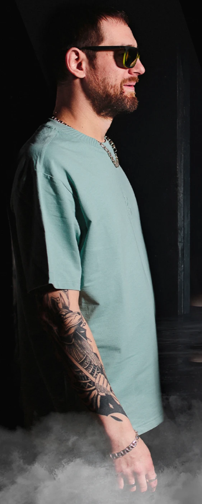

01 / ВИТАЛИЙ ТКАЧЕНКОVer-Dikt
DJ / PRODUCER / SOUND ENGINEER
Музыкант, саундпродюсер и звукорежиссёр. Создаёт электронную музыку, преподаёт продакшен и DJ-инг, работает с дизайном и графикой. Его треки звучали на Kiss FM, Radio Record и DFM, попадали в чарты Beatport и Traxsource.